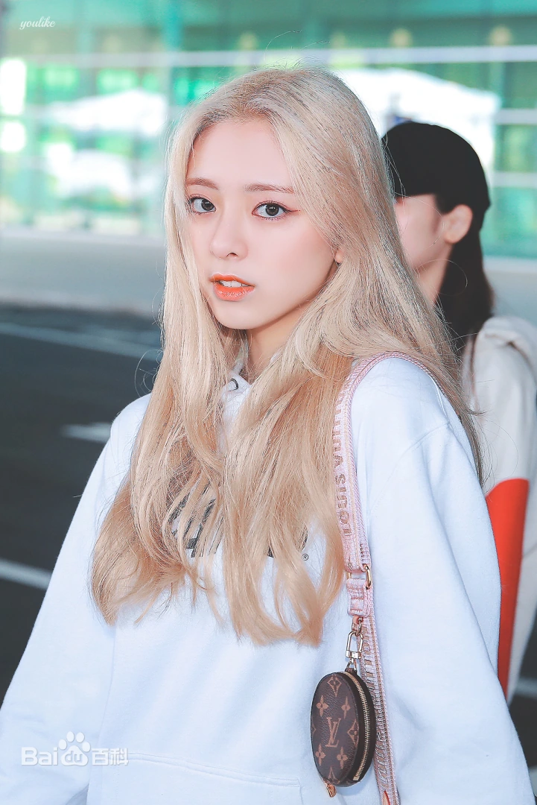
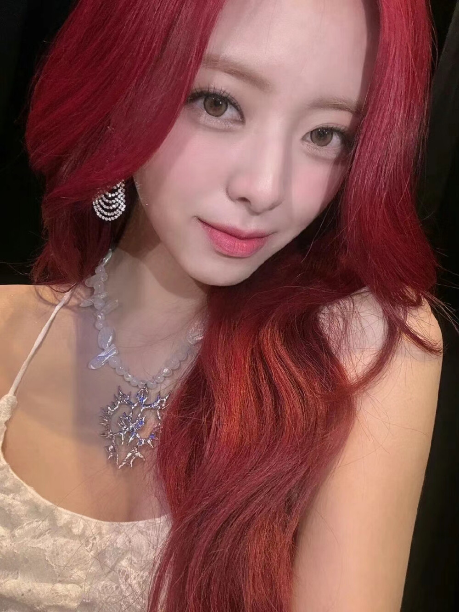

| 中文名 | 申有娜 | 韩文名 | 유나 | 生日 | 2003-12-09 | 星座 | 射手座 | 队内担当 | 门面、副唱、忙内、领舞 | 所属社 | JYP Entertainment |
|---|
申有娜天生自带爱豆门面气质，五官精致灵动，长相元气甜美，少女感十足。身高优越、身材比例超好，大长腿线条好看，整个人站在人群里非常亮眼。气质青春活力、阳光开朗，自带元气少女感，既能驾驭甜美可爱风，也能撑起成熟精致御姐风，可塑性极强。

作为队内忙内门面，舞台表现力非常活泼灵动，表情丰富有感染力，肢体舒展大方，跳舞元气满满、活力十足。台风大方自信，不怯场不拘谨，镜头感超强。唱歌音色清亮甜美，音准稳定，副唱部分表现亮眼，舞台状态永远活力满满，感染力很强，能带动整个舞台的氛围。
作为团队最小的忙内，被四位姐姐宠爱，但本人非常懂事乖巧、有礼貌、懂得感恩。性格外向开朗、活泼爱笑，性格乐观阳光，很会活跃队内气氛，可爱又不做作，元气满满。性格直率可爱，天真烂漫，心思单纯，待人真诚热情，对粉丝温柔暖心，性格讨喜又招人疼爱。
她身上满满的青春元气感，颜值优越、身材出众、性格阳光可爱，舞台灵动有活力。既是团里被宠的忙内，又是自带光芒的门面担当，少女感十足，治愈又亮眼。